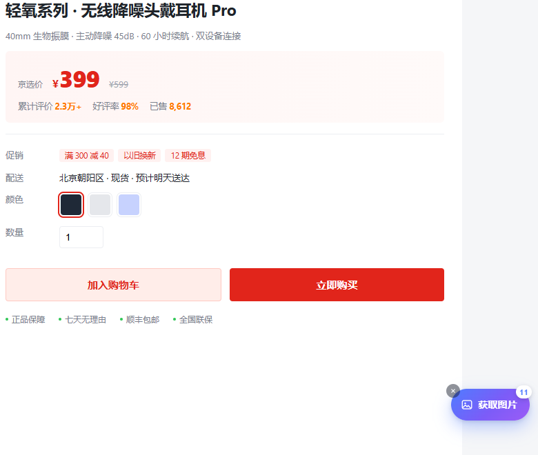

图片藏在各处
主图、srcset、data-src、背景图……同一个页面的图片可能来自五六种不同的加载方式。
Edge / Chrome 扩展 · v1.0.0
图提取 ImageGrab 自动扫描淘宝、天猫、京东、拼多多商品详情页的所有图片， 智能过滤图标与占位图，在独立画廊里集中预览、自由勾选，一键保存为统一格式的 PNG。
图片不出本机，全程无上传
为什么需要它
商品主图、细节图、场景图、规格长图散落在页面各处，有的还是懒加载。 一张张右键另存，既慢又容易漏。
主图、srcset、data-src、背景图……同一个页面的图片可能来自五六种不同的加载方式。
二十张细节图就要重复二十次右键操作，文件名混乱，后期整理还要再花时间。
JPG、WebP、PNG 混在一起，上传素材库或做图时还要逐个转换格式。
更顺手的方式
在商品详情页右下角，图提取会显示一个不打扰浏览的小按钮。 点击后自动扫描全页图片，几秒内把结果整理到新的画廊标签页。

核心功能
不只是「把图片列出来」，而是从提取、筛选到下载的完整工作流。
自动扫描页面内 img、srcset、data-src、background-image 等来源，兼容懒加载。
自动排除图标、logo、头像、占位图、1×1 像素图，以及短边小于 100px 的小图。
自动去重 + 绝对路径补全在新标签页网格展示全部图片，显示实时尺寸与原始格式，支持单张放大预览。
响应式网格布局全选、反选、清空、按尺寸筛选、按大图排序，只下载真正需要的那几张。
支持快捷键 Ctrl / ⌘ + AJPG、WebP、GIF 等格式在后台自动转换为 PNG，保留透明通道与原始分辨率。
canvas 无损转码逐张显示转换进度，完成后给出成功与失败反馈，文件名自动编号。
商品图_001.png 起效果预览
所有图片汇总在一个页面里，尺寸、格式、数量一目了然。
安装步骤
Edge 与 Chrome 使用相同的内核，下载解压后即可加载。无需开发者账号，也无需翻墙。
下载 ImageGrab-v1.0.0.zip，解压到任意本地文件夹（例如 D:\ImageGrab）。
打开 Edge，在地址栏输入 edge://extensions 回车；Chrome 则输入 chrome://extensions。
在扩展页面打开「开发人员模式」开关，页面顶部会出现「加载解压缩的扩展」按钮。
点击「加载解压缩的扩展」，选择解压后的文件夹（内含 manifest.json 的那一层）。
常见问题
内置适配淘宝、天猫、京东、拼多多（含手机版详情页）的商品详情页，按钮会自动出现。其他网站也可以在工具栏点击扩展图标，手动触发一次提取。
不会。提取、预览、转 PNG 全部在你的浏览器本地完成，插件不收集浏览记录，也不会把图片发往任何第三方服务器。
保存在浏览器默认下载目录，文件名从 商品图_001.png 开始按顺序编号。若文件名重复，浏览器会自动追加 (1)、(2) 等后缀。
极少数图片源站会限制跨域读取，此时插件会退回下载原始格式并在结果里提示数量，避免生成打不开的假 PNG。绝大多数商品图都会正常转换。
请确认加载的是解压后的文件夹，并在 edge://extensions 中保持启用状态。安装后需要刷新一次商品详情页；如果页面不是详情页，点击工具栏的「图提取」图标即可手动提取。